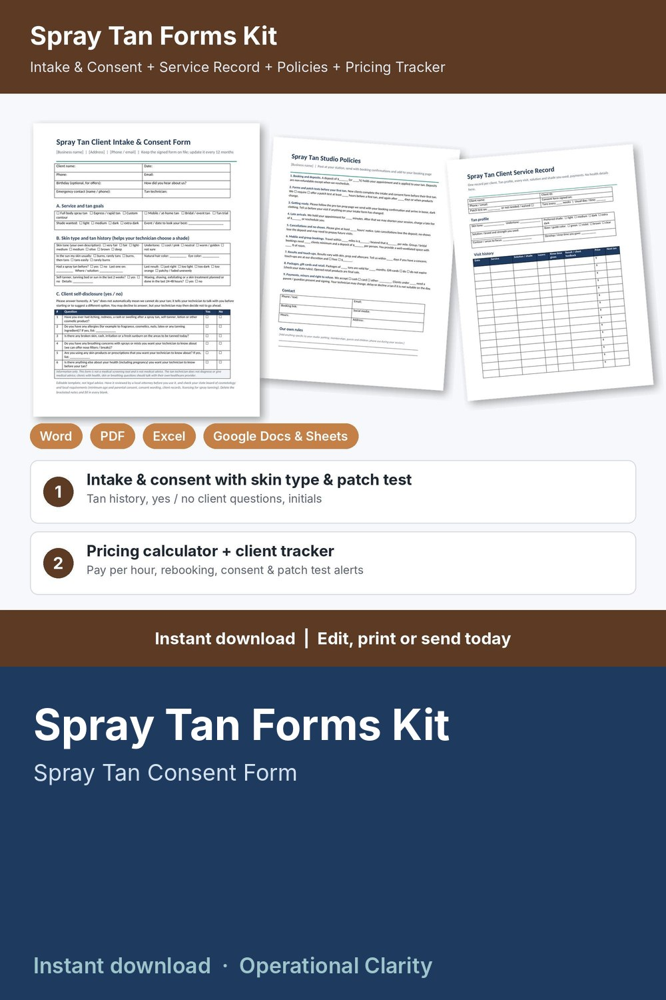

Spray Tan Forms Kit

Get the consent form and patch test record on file, price every spray tan so it pays you, and know when each client is due back: a complete spray tan forms kit with a working pricing calculator and client tracker, not just a few printable pages.
WHAT'S INSIDE
- Spray Tan Client Intake & Consent Form (Word + PDF, 2 pages): client details, service and shade wanted, event date, skin type and tan history (skin tone, undertone, how skin reacts to sun, last spray tan and result, recent self-tanner / sun, recent waxing or exfoliating), simple yes / no client self-disclosure questions, patch test record (date, solution, area, result checked) or signed decline, 7 initialed acknowledgments, consent and release, before / after photo consent, client and technician signatures, parent / guardian line, yearly review / update log.
- Spray Tan Client Service Record (Word + PDF, 2 pages): tan profile (skin tone, undertone, preferred shade, solution, base color, contour areas), visit history (solution / shade, layers, rinse time you gave, client feedback, price, next tan), retail, deposits and balances, packages and memberships, before / after photo log.
- Spray Tan Studio Policies (Word + PDF): 9 ready-to-edit policies for deposits, forms and patch tests, getting ready, late arrivals, cancellations and no-shows, mobile and group / bridal bookings, results and touch-ups, packages / gift cards / retail, payments, minors and right to refuse.
- Blank Pre-Tan Prep and Post-Tan Care pages (in the policies file): branded pages left blank for your own instructions, so you use the wording for the solutions you work with.
- Spray Tan Pricing Calculator & Client Tracker (Google Sheets / Excel, 6 tabs):
* Service Menu: minutes, product cost (solution and disposables) and your price for each tan and add-on; suggested price from your target hourly pay, overhead and card fees; what you keep and your real pay per hour; BELOW SUGGESTED flag
* Settings: target pay, monthly overhead, booked hours, card fees, deposit % and minimum, rounding, and after how many days your studio asks for a new patch test (your own policy)
* Clients: contact details, tan notes (shade, solution, skin tone, tan history), consent form date, patch test date or "not needed / waived" mark, visits, total spent, retail bought, next tan due and rebook alerts (REBOOK NOW / DUE SOON / BOOKED); no health information stored
* Appointments: service and add-on looked up from your menu, discounts, deposits, refunds, status, retail sold, days since last visit, balances and alerts (CONSENT MISSING / PATCH TEST MISSING / BALANCE DUE / DEPOSIT DUE / SEND FORMS / PATCH TEST DUE / UPCOMING / UPDATE STATUS)
* Dashboard: service revenue, retail sales, tips, product costs, card fees, what you keep, pay per hour worked, average ticket, no-show rate, deposits held, month-by-month and service-by-service tables, chart and a list of appointments that need attention
- START HERE guide (PDF)
HOW IT WORKS
1. Enter your target pay, overhead, card fees and patch test policy on Settings.
2. Add your tans on the Service Menu tab and fix anything flagged BELOW SUGGESTED.
3. Write your own text on the blank Pre-Tan Prep and Post-Tan Care pages, then send new clients the policies, prep page and Intake & Consent Form before their first tan; note the consent date and patch test date on Clients.
4. Log each booking and deposit; price, time and product cost fill in automatically.
5. After each tan, record payment, tip and retail sales, and watch the alerts for missing consent forms or patch tests, balances, deposits and clients due back.
Example data (8 services, 14 sample clients, 58 appointments) shows how it all connects; delete it and type your own. Yellow cells = type here, green cells = calculated.
FORMATS
- Word .docx (edit in Microsoft Word, Google Docs, Pages or LibreOffice) + PDF, US Letter
- Excel .xlsx made for Google Sheets (also works in Excel and LibreOffice; no macros)
This is an instant digital download, no physical item will be shipped.
Editable template, not legal advice. Have it reviewed by a local attorney and check your state board of cosmetology and local requirements (consent wording, minors, patch tests, client records, licensing) before you use it. The client questions are simple yes / no self-disclosures: information only, not a medical screening tool and not medical advice. No prep, aftercare, skin care or medical advice is included; follow your solution manufacturer's instructions.